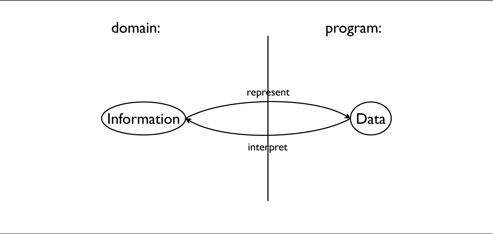
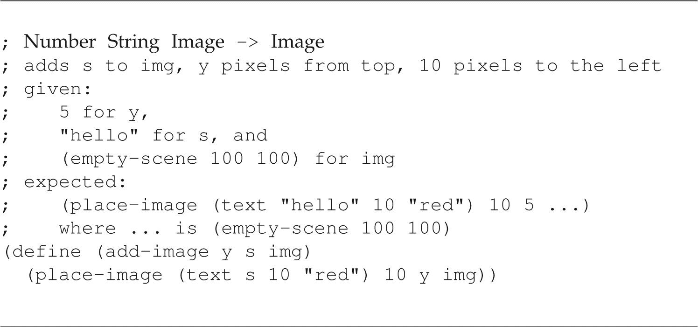

3.1 Designing Functions
Information and Data The purpose of a program is to describe a computational process that consumes some information and produces new information. In this sense, a program is like the instructions a mathematics teacher gives to grade school students. Unlike a student, however, a program works with more than numbers: it calculates with navigation information, looks up a person’s address, turns on switches, or inspects the state of a video game. All this information comes from a part of the real world—often called the program’s domain—and the results of a program’s computation represent more information in this domain.
Information plays a central role in our description. Think of information as facts about the program’s domain. For a program that deals with a furniture catalog, a “table with five legs” or a “square table of two by two meters” are pieces of information. A game program deals with a different kind of domain, where “five” might refer to the number of pixels per clock tick that some object travels on its way from one part of the canvas to another. Or, a payroll program is likely to deal with “five deductions.”
For a program to process information, it must turn it into some form of data in the programming language; then it processes the data; and once it is finished, it turns the resulting data into information again. An interactive program may even intermingle these steps, acquiring more information from the world as needed and delivering information in between.
We use BSL and DrRacket so that you do not have to worry about the translation of information into data. In DrRacket’s BSL you can apply a function directly to data and observe what it produces. As a result, we avoid the serious chicken-and-egg problem of writing functions that convert information into data and vice versa. For simple kinds of information, designing such program pieces is trivial; for anything other than simple information, you need to know about parsing, for example, and that immediately requires a lot of expertise in program design.
Software engineers use the slogan model-view-controller (MVC) for the way BSL and DrRacket separate data processing from parsing information into data and turning data into information. Indeed, it is now accepted wisdom that well-engineered software systems enforce this separation, even though most introductory books still comingle them. Thus, working with BSL and DrRacket allows you to focus on the design of the core of programs, and, when you have enough experience with that, you can learn to design the information-data translation parts.
Here we use two preinstalled teachpacks to demonstrate the separation of data and information: 2htdp/batch-io and 2htdp/universe. Starting with this chapter, we develop design recipes for batch and interactive programs to give you an idea of how complete programs are designed. Do keep in mind that the libraries of full-fledged programming languages offer many more contexts for complete programs, and that you will need to adapt the design recipes appropriately.
Given the central role of information and data, program design must start with the connection between them. Specifically, we, the programmers, must decide how to use our chosen programming language to represent the relevant pieces of information as data and how we should interpret data as information. Figure 15 explains this idea with an abstract diagram.

Figure 15: From information to data, and back
To make this idea concrete, let’s work through some examples. Suppose you are designing a program that consumes and produces information in the form of numbers. While choosing a representation is easy, an interpretation requires explaining what a number such as 42 denotes in the domain:
• 42 may refer to the number of pixels from the top margin in the domain of images;
• 42 may denote the number of pixels per clock tick that a simulation or game object moves;
• 42 may mean a temperature, on the Fahrenheit, Celsius, or Kelvin scale for the domain of physics;
• 42 may specify the size of some table if the domain of the program is a furniture catalog; or
• 42 could just count the number of characters in a string.
The key is to know how to go from numbers as information to numbers as data and vice versa.
Since this knowledge is so important for everyone who reads the program, we often write it down in the form of comments, which we call data definitions. A data definition serves two purposes. First, it names a collection of data—a class—using a meaningful word. Second, it informs readers how to create elements of this class and how to decide whether some arbitrary piece of data belongs to the collection.
Computing scientists use “class” to mean something like a “mathematical set.”
Here is a data definition for one of the above examples:
; A Temperature is a Number.
; interpretation represents Celsius degrees
The first line introduces the name of the data collection, Temperature, and tells us that the class consists of all Numbers. So, for example, if we ask whether 102 is a temperature, you can respond with “yes” because 102 is a number and all numbers are temperatures. Similarly, if we ask whether "cold" is a Temperature, you will say “no” because no string belongs to Temperature. And, if we asked you to make up a sample Temperature, you might come up with something like −400.
If you happen to know that the lowest possible temperature is approximately −274° C, you may wonder whether it is possible to express this knowledge in a data definition. Since our data definitions are really just English descriptions of classes, you may indeed define the class of temperatures in a much more accurate manner than shown here. In this book, we use a stylized form of English for such data definitions, and the next chapter introduces the style for imposing constraints such as “larger than −274.”
So far, you have encountered the names of four classes of data: Number, String, Image, and Boolean. With that, formulating a new data definition means nothing more than introducing a new name for an existing form of data, say, “temperature” for numbers. Even this limited knowledge, though, suffices to explain the outline of our design process.
At this point, you may wish to reread the section on Systematic Program Design in the Preface, especially figure 1.
The Design Process Once you understand how to represent input information as data and to interpret output data as information, the design of an individual function proceeds according to a straightforward process:
1. Express how you wish to represent information as data. A one-line comment suffices:
; We use numbers to represent centimeters.
Formulate data definitions, like the one for Temperature, for the classes of data you consider critical for the success of your program.
2. Write down a signature, a statement of purpose, and a function header.
A function signature is a comment that tells the readers of your design how many inputs your function consumes, from which classes they are drawn, and what kind of data it produces. Here are three examples for functions that respectively
• consume one String and produce a Number:
; String -> Number
• consume a Temperature and produce a String:
; Temperature -> String
As this signature points out, introducing a data definition as an alias for an existing form of data makes it easy to read the intention behind signatures.
Nevertheless, we recommend that you stay away from aliasing data definitions for now. A proliferation of such names can cause quite a lot of confusion. It takes practice to balance the need for new names and the readability of programs, and there are more important ideas to understand right now.
• consume a Number, a String, and an Image:
; Number String Image -> Image
Stop! What does this function produce?
A purpose statement is a BSL comment that summarizes the purpose of the function in a single line. If you are ever in doubt about a purpose statement, write down the shortest possible answer to the question
what does the function compute?
Every reader of your program should understand what your functions compute without having to read the function itself.
A multi-function program should also come with a purpose statement. Indeed, good programmers write two purpose statements: one for the reader who may have to modify the code and another one for the person who wishes to use the program but not read it.
Finally, a header is a simplistic function definition, also called a stub. Pick one variable name for each class of input in the signature; the body of the function can be any piece of data from the output class. These three function headers match the above three signatures:
• (define (f a-string) 0)
• (define(g n) "a")
• (define(h num str img) (empty-scene 100 100))
Our parameter names reflect what kind of data the parameter represents. Sometimes, you may wish to use names that suggest the purpose of the parameter.
When you formulate a purpose statement, it is often useful to employ the parameter names to clarify what is computed. For example,
; Number String Image -> Image
; adds s to img,
; y pixels from the top and 10 from the left
(define (add-image y s img)
(empty-scene 100 100))
At this point, you can click the RUN button and experiment with the function. Of course, the result is always the same value, which makes these experiments quite boring.
3. Illustrate the signature and the purpose statement with some functional examples. To construct a functional example, pick one piece of data from each input class from the signature and determine what you expect back.
Suppose you are designing a function that computes the area of a square. Clearly this function consumes the length of the square’s side, and that is best represented with a (positive) number. Assuming you have done the first process step according to the recipe, you add the examples between the purpose statement and the header and get this:
; Number -> Number
; computes the area of a square with side len
; given: 2, expect: 4
; given: 7, expect: 49
(define (area-of-square len) 0)
4. The next step is to take inventory, to understand what are the givens and what we need to compute. For the simple functions we are considering right now, we know that they are given data via parameters. While parameters are placeholders for values that we don’t know yet, we do know that it is from this unknown data that the function must compute its result. To remind ourselves of this fact, we replace the function’s body with a template.
We owe the term “inventory” to Stephen Bloch.
For now, the template contains just the parameters, so that the preceding example looks like this:
(define (area-of-square len)
(… len …))
The dots remind you that this isn’t a complete function, but a template, a suggestion for an organization.
The templates of this section look boring. As soon as we introduce new forms of data, templates become interesting.
5. It is now time to code. In general, to code means to program, though often in the narrowest possible way, namely, to write executable expressions and function definitions.
To us, coding means to replace the body of the function with an expression that attempts to compute from the pieces in the template what the purpose statement promises. Here is the complete definition for area-of-square:
; Number -> Number
; computes the area of a square with side len
; given: 2, expect: 4
; given: 7, expect: 49
(define (area-of-square len)
(sqr len))
To complete the add-image function takes a bit more work than that: see figure 16. In particular, the function needs to turn the given string s into an image, which is then placed into the given scene.

Figure 16: The completion of design step 5
6. The last step of a proper design is to test the function on the examples that you worked out before. For now, testing works like this. Click the RUN button and enter function applications that match the examples in the interactions area:
> (area-of-square 2)
4
>(area-of-square 7)
49
The results must match the output that you expect; you must inspect each result and make sure it is equal to what is written down in the example portion of the design. If the result doesn’t match the expected output, consider the following three possibilities:
(a) You miscalculated and determined the wrong expected output for some of the examples.
(b) Alternatively, the function definition computes the wrong result. When this is the case, you have a logical error in your program, also known as a bug.
(c) Both the examples and the function definition are wrong.
When you do encounter a mismatch between expected results and actual values, we recommend that you first reassure yourself that the expected results are correct. If so, assume that the mistake is in the function definition. Otherwise, fix the example and then run the tests again. If you are still encountering problems, you may have encountered the third, somewhat rare, situation.